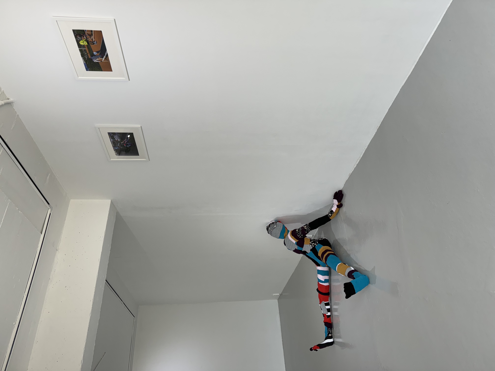
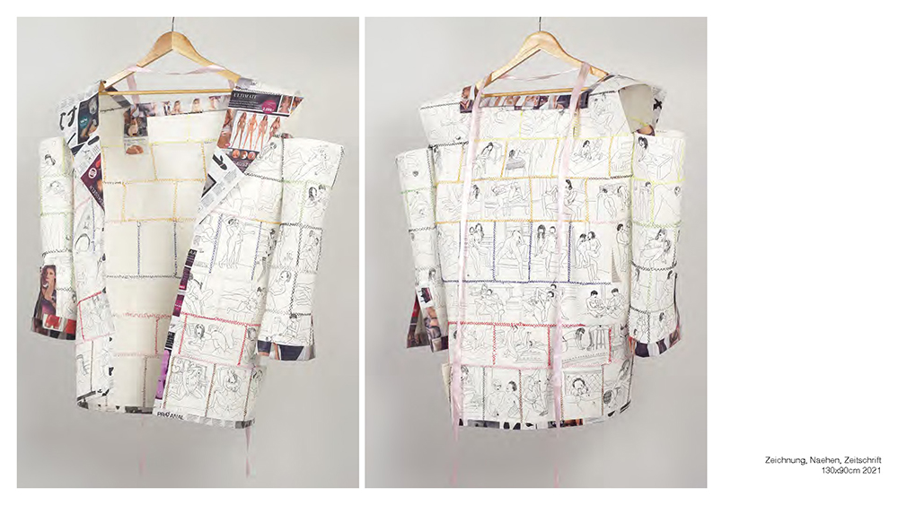
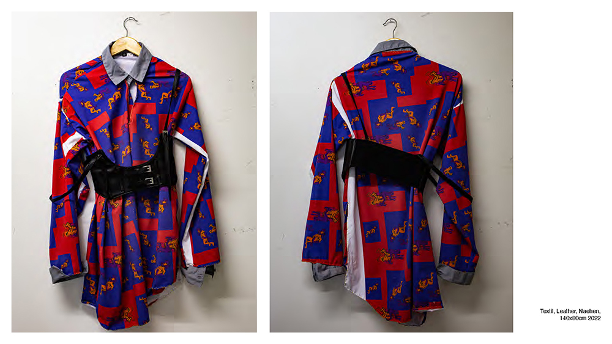
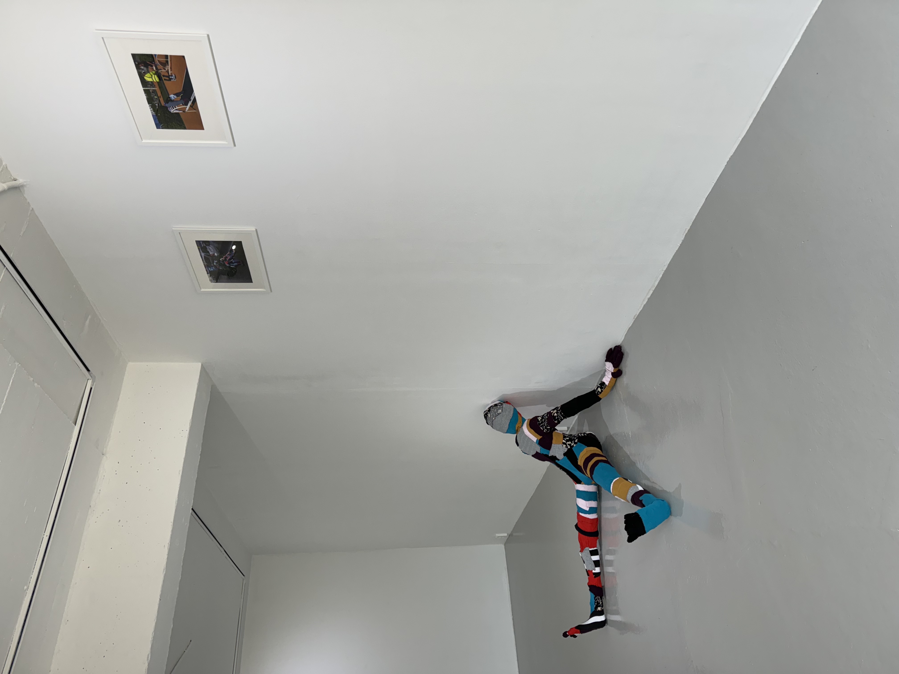
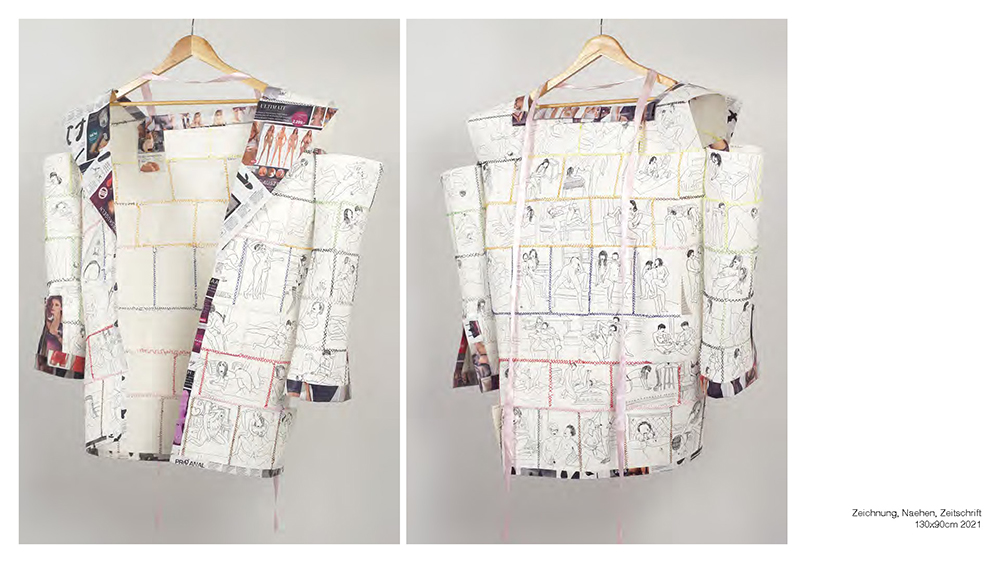
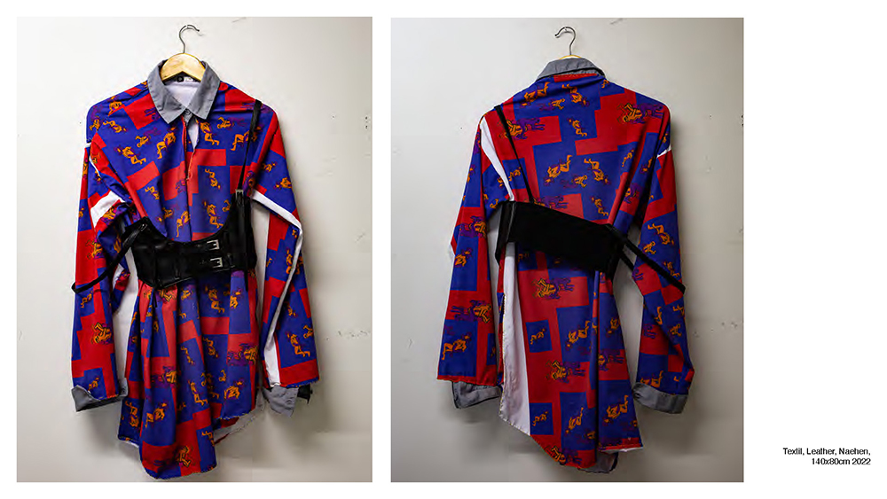

정시우 작가와의 대화
오윤영)
안녕하세요, 작가님. 한국에서 첫 개인전을 여셨는데, 작품들을 독일에서 제작 후 분해하여 한국에서 다시 조립하셨다고요. 이전에 이 인형들과 함께 여러 지역을 돌아다니는 퍼포먼스를 진행하셨는데, 이를 여기서 다시 합치고 선보인다는 것이 저에게는 사회·문화적 규범에 대한 의문을 보여주는 퍼포먼스의 연장으로 보였습니다. 그렇다면 작가님은 ‘이동’과 ‘문화’ 혹은 ‘옷’에 대해 어떤 생각을 가지고 계시나요?
정시우)
문화라는 단어를 국어사전에서 찾아보면 “자연 상태에서 벗어나 일정한 목적 또는 생활 이상을 실현하고자 사회 구성원에 의하여 습득·공유·전달되는 행동 양식”이라고 정의되어 있습니다. 저에게 문화는 사회적 규범이나 도덕이랑도 비슷한 모습이 있다고 생각했어요.
근데 조금 더 생활적인 양식들이 더 많은 단어이고, 제가 봤을 때 문화를 보여주는 요소인 매개체적인 면에서 옷이라는 주제가 굉장히 흥미롭다고 생각했거든요.
옷이라는 게 저희의 개성이라고도 이야기하지만, 사회적으로 필터링되는 부분이 분명 존재하고, 그 안에서 사실 규율이 있기 때문에 옷으로 작업을 해보면 그 사회나 문화를 보여줄 수 있는 요소가 참 많겠다고 생각했어요. 저에게 이동이라는 것은 제 문화에서 한 발짝 물러서기, 그 문화를 다른 문화권과 비교해 보고 분석할 수 있는 기회를 제공하는 것 같아요.
오윤영)
전시명 《너는 누구이며 나는 무엇을 할 수 없는가》에서 ‘너’와 ‘나’는 모두 사회에 종속된 개인을 이야기하는 것처럼 다가왔습니다. 인형은 각각 한 사람의 옷을 기증받고, 이는 작가님의 긴 시간을 통해 제작되고요. 본래 주인의 나이도 성별도 알 수 없는 인형들은 수수께끼처럼 전시장에 놓여 너는 누구이며 무엇을 할 수 없니? 라고 되묻는듯했어요. ‘해체와 재조립’은 작가님에게 어떻게 다가오나요?
정시우)
저희는 ‘인간은 사회적 동물이다’라는 말을 하잖아요. 저는 그 말 자체가 인간이 사회적이지 않으면 살아남을 수 없다는 것으로 느껴지거든요. 인간은 어떻게 사회적으로 살아남는가에 대한 물음이 결국 저희는 해체와 재조립과 같다고 생각해요. 저희가 사회적으로 받는 의무 교육이라던지 개인이 태어날 때부터 가지는 기질 아니면 부모님을 통해서 계속 연결돼서 받아져 오는 교육 그런 양상 모든 것들이 해체와 재조립과 관련이 있다고 생각해요.
제 작업을 대하는 저의 태도에서도 저는 많은 폭력성을 마주하고 있어요. 옷이라는 것은 사실 입기 위해서 제작이 되었고, 누군가가 그 옷들을 입었고, 그걸 제가 다시 받아서 잘라버렸고, 물리적으로 다시 재조립했고, 이 모든 것들이 굉장히 폭력적인데 그게 사회랑도 굉장히 닮아 있는 모습들이 있어서 저한테는 과정 자체가 되게 재밌는 것 같아요.
오윤영)
그렇다면 사회가 가하는 규범과 폭력. 이런 것들에 대해 이야기하고 싶으셨던 건가요?
정시우)
네, 아직은 제가 그것에 대해 의견을 말하고 싶은 건 아닌 것 같고. 의문 제기라든지, 제가 그것 자체에서 질문을 두고 싶은 것 같습니다.
오윤영)
여기 작품을 들여다봤을 때 빨간 실을 사용해 사선과 X 모양으로 천을 엮어낸 점이 눈에 띕니다. 다른 색을 사용했었지만, 이러한 형태는 과거 작품에서부터 보이고요. 오랜 시간이 걸렸을 것 같은데, 이러한 방식을 사용하며 바느질하는 동안 들었던 생각이 있을까요?
정시우)
말씀하신 대로 제가 다양한 색깔을 사용했었는데 붉은 실로 정착하게 된 것은 설화 중에 그 사람을 인연으로 엮어주는 의미로써의 붉은 실 때문이에요. 저는 이 인형, 조각조각 난 옷들을 다시 엮어줄 수 있는 요소라고 생각했거든요.
그리고 X자가 원래 코르셋에서 제가 가지고 온 모형이었는데, 지금은 약간 눕혀진 형태로 있어서 어떤 면에서 보면 십자가 같은 모습도 되고 재미있는 형태라고 생각이 들어요. 당연히 재봉틀을 이용하면 굉장히 빠른 속도로 인형을 만들 수 있겠지만, 바느질 행위 그 자체가 저에게는 작업과 직접적으로 연결된다는 느낌을 갖게 해요. 많은 시간을 보내다보면 작업과 더 많은 소통이 되는 것 같아요. 그 과정 자체에서 오는 더 많은 물음과 가치가 있다고 저는 생각하거든요.
오윤영)
설치 작업을 하시니까 공간에 따라 같은 작업이어도 다르게 느껴지거나, 또 그 공간 안에서만 상호작용할 수 있는 게 있을 것 같아요. 정시우 작가님의 작업을 보는 분들에게 하고 싶은 말이나 공유하고 싶은 것이 있다면 이야기해 주세요.
정시우)
토론을 많이 하고 싶습니다. 저는 오는 관조자들과 이야기하는 게 너무 즐거워요. 많은 영감을 받는 것 같고, 작업을 봄에 있어서 어렵게 생각하지 않았으면 좋겠어요. 항상.
오윤영)
답변 감사합니다. 작가님께 궁금한 점이 있으신 분 질문해주시면 감사하겠습니다.
참석자 1)
작품을 독일에서 제작하셨다고 하셨는데 거기서 분해하고 가져오는 그 방식이 있잖아요. 내부는 스티로폼과 금속으로 제작된 것 같은데, 자세 자체는 저 작품들이 다 임의로 변경할 수 있게 만들어진 건가요?
정시우)
아니에요. 원래 있던 인형들은 안 자체도 헌 옷이었기 때문에 변경이 가능했지만 그 뒤로는 제작하는 것에 있어 한 자세를 취하는 것들이 더 오브제적인 면이 있겠다. 싶어 변경했어요. 해체는 계획된 건 아니었고 독일에서 가지고 있는 운송적인 면도 있고 여러 가지 부가적인 이유로 해체해서 들고 왔어요.
참석자 2)
자세가 멈춰 있다는 점에서 저는 수동적인 느낌이 들었는데 멀리서 봤을 때는 능동적인 객체로도 보였거든요. 그래서 전 처음에 얘네가 고정되어 있는 게 아니라 계속 이 자세를 바꿀 수 있는 존재 같아 보여서 능동적인 자아를 가지고 있다는 느낌을 받았는데 일부러 고정을 하실 필요가 있었을까요?
정시우)
원래 인형들이 그렇게 돼 있었어요. 저는 좀 더 천의 느낌을 줄 수 있는 게 좋겠다.라는 생각을 해서 저희가 흔히 생각하는 인형 그대로의 널브러진 모습이라든지, 여러 공간에 기댈 수 있는 형태였는데 그게 의외로 이 옷 자체에 대한 집중도를 떨어뜨리는 것 같은 거예요. 저한테 중요한 요소는 관조자들이 이 인형을 보고 어떤 생각을 하는지인데 그 자세가 조금 더 포커싱이 맞춰진다든지 이런 게 생기는 것 같아서. 그렇게 될 바에는 차라리 한 자세로 고정을 해버리자고 생각했습니다. 사실 이렇게 시도한 지는 반년 정도 된 것 같아요. 좀 더 변할 수 있지만 지금은 멈췄습니다.
참석자 3)
사진 작업이 보는 시선보다 더 높게 있다는 느낌이 들었습니다. 혹시 그렇게 설치하신 이유가 따로 있으신가요?
정시우)
사실 설치를 할 때 사진이 추가적으로 들어온 거긴 해요. 사진 작업들이 제 인형들을 거스르지 않게 했으면 좋겠다고 생각해서 조금 거리감을 띄우고 싶기도 했어요. 오브제들이 바닥에 있다 보니까 공간 자체에 눌림이 있을 것 같다는 생각도 해서 조금 띄워 디피를 한 것도 있는 것 같아요.
오윤영)
추가로 궁금해진 게 있는데, 예전에 작품 제작하실 때 피부처럼 천을 씌운다. 이렇게 말씀하셨는데 작업을 하시면서 내가 피조물을 만들고 있다. 이런 생각은 안 해보셨나요?
정시우)
한 번도 안 해봤어요. 피조물이라는 느낌보다는, 저에게 동지라고 하면 조금 이상할까요? 저는 페인팅을 만들 때는 피조물이라는 생각이 들거든요. 나의 통제될 수 있는 공간 안에서의 놀이? 내가 원하는 대로 만들 수 있는 이미지라는 느낌이 있는데 설치 작업에서는 공간이나 작업과의 의사소통이 더 많이 되는 느낌이더라고요. 그래서 제가 피조를 했다는 생각을 한 번도 해본 적이 없어요. 만들어졌다? 그런 것 같아요.
오윤영)
회화 같은 경우에는 통제하에 만들어 내지만, 이런 설치 작업 같은 경우에는 관람자분들과 다 같이 만들어 나간다고도 볼 수 있을 것 같아요.
정시우)
그렇죠. 여러 가지 요소들이 있는 것 같고. 지금까지는 그렇게 작업을 해 온 것 같아요.